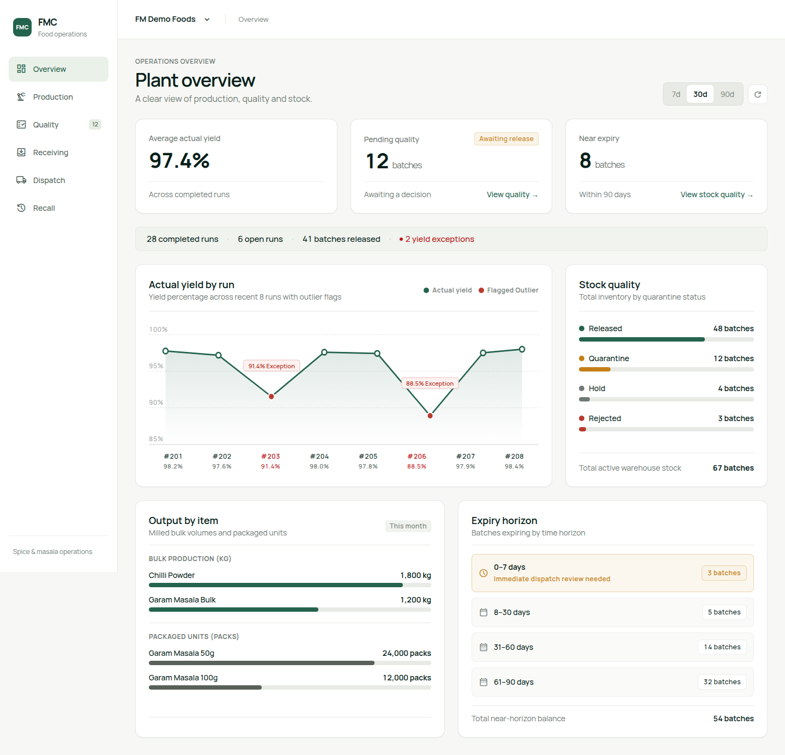
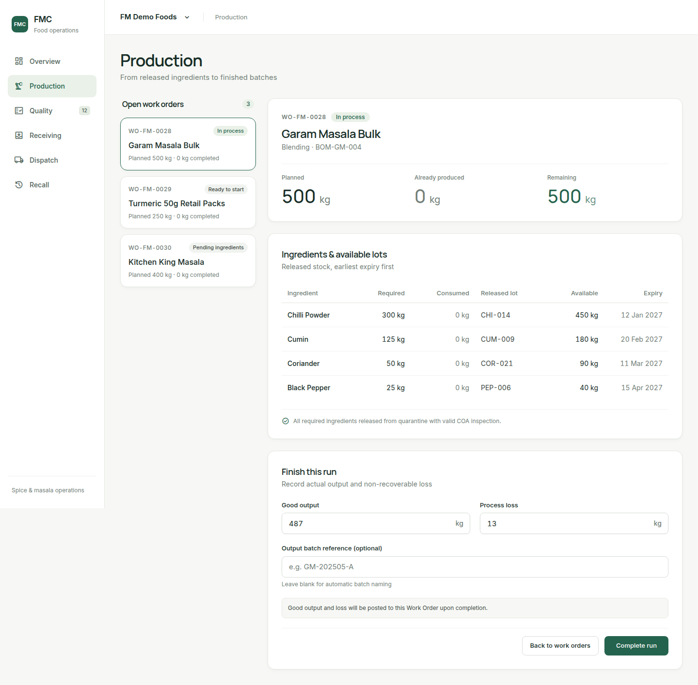
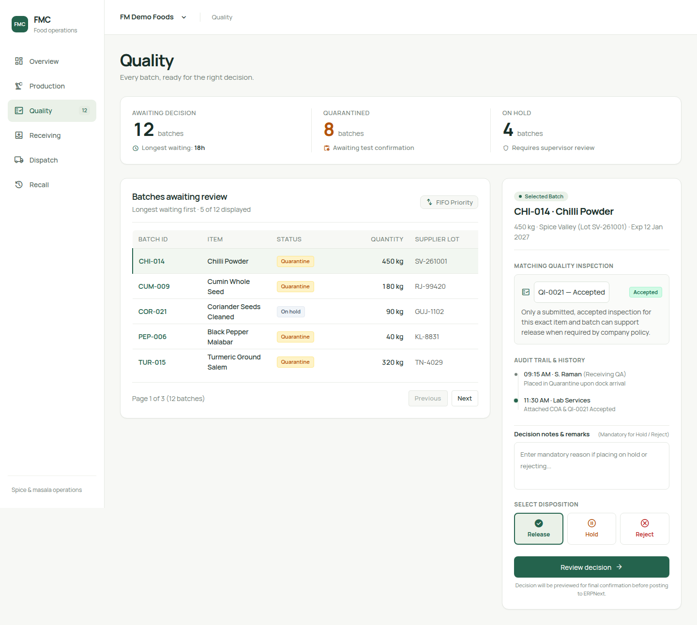
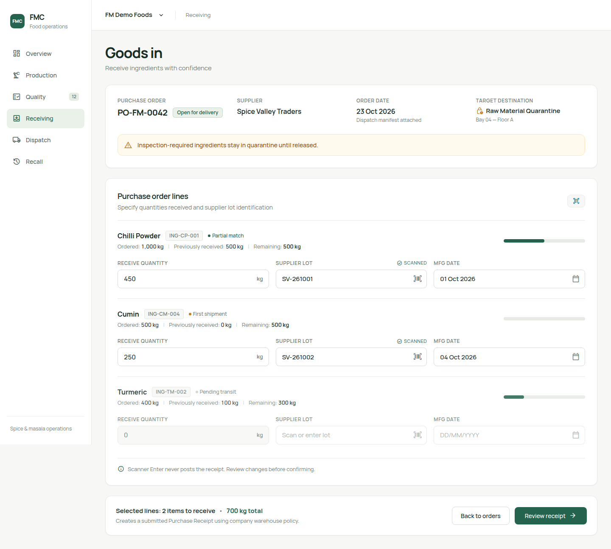
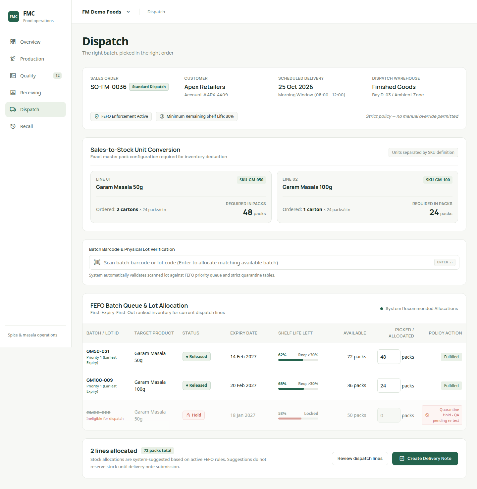
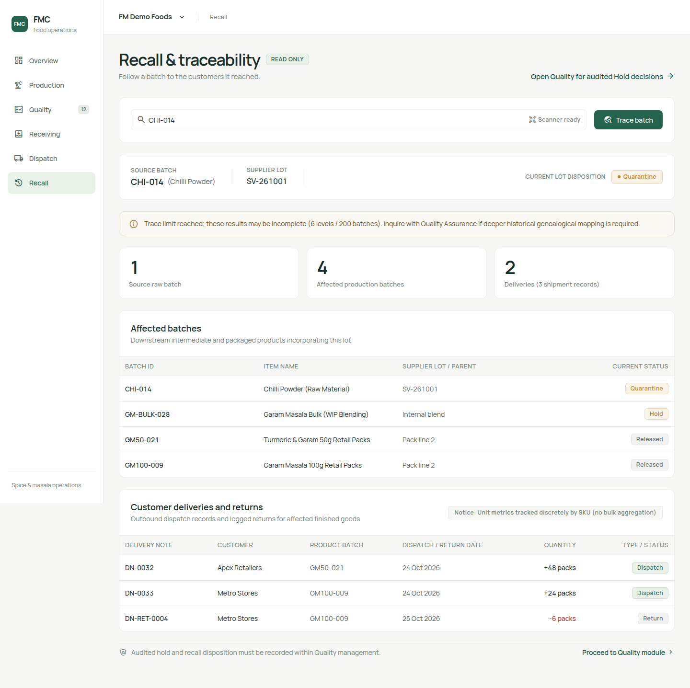

Clear work. Confident decisions.
Six connected workflows, one considered experience. Explore the complete FMC interface on desktop and phone.










06
Recall & traceability
Follow affected batches to customer deliveries.